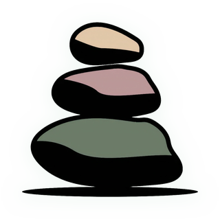

Cairns
Hike planner
Pick a route. Set the date, start time and forecast, and it times every stop, the turnaround and the finish. Works offline once opened.
Checking offline copy…

Hike planner
Pick a route. Set the date, start time and forecast, and it times every stop, the turnaround and the finish. Works offline once opened.